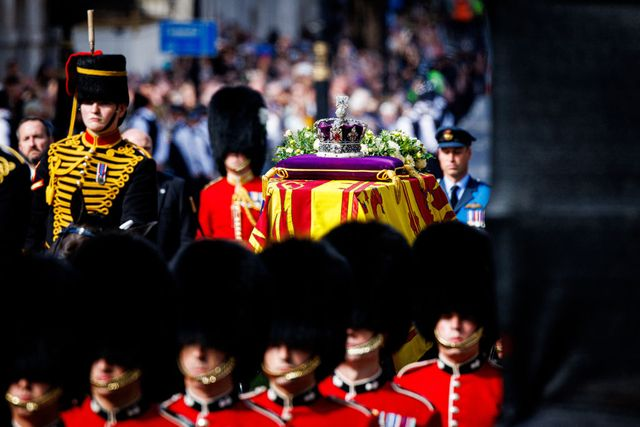

(Stirile tale preferate la doar un click distanta)
Stirea zilei
Un cod galben de instabilitate atmosferică temporar accentuată intră în vigoare de la ora 12:00 și va fi în vigoare până sâmbătă, la ora 12:00.
Acesta vizează regiunile Banat, Oltenia, local în Crișana, Transilvania, Muntenia, în sudul și centrul Moldovei, precum și zonele de munte, transmit meteorologii, care au emis avertismente și pentru cantități însemnate de ape și intensificări ale vântului pentru perioada următoare, până duminică la ora 20:00.
În intervalul 16 septembrie, ora 12:00 – 17 septembrie, ora 12:00, în Banat, Oltenia, local în Crișana, Transilvania, Muntenia, în sudul și centrul Moldovei, precum și în zonele de munte vor fi perioade cu averse torențiale, descărcări electrice, intensificări ale vântului și izolat grindină și vijelii. În intervale scurte de timp sau prin acumulare, cantitățile de apă vor depăși 25...30 l/mp și izolat 40...50 l/mp, arată ANM.
Bijuteriile simbolice purtate de Kate, Meghan și Camilla pentru a-i aduce un omagiu reginei Elisabeta a II-a
Prințesa Catherine a ales bijuterii simbolice pentru a-și lua rămas bun de la Regina Elisabeta a II-a la Westminster Hall, inclusiv o broșă care i-a aparținut cândva suveranei. Și regina consoartă Camilla și ducesa Meghan au purtat bijuterii cu semnificație simbolică în timpul aparițiilor publice de după moartea reginei. La ceremonia de la Westminster Hall, prințesa Kate a purtat cerceii cu perle moșteniți de la Prințesa Diana, cu care împărtășește acum același titlu regal. De asemenea, și-a decorat costumul negru cu o broșă care a aparținut cândva Reginei.
„Priveghiul Prinţilor”. Regele Charles și frații acestuia se vor reculege la sicriul Reginei Elisabeta a II-a
Regele Charles al III-lea, prinţesa Anne, prinţul Andrew şi prinţul Edward se vor reculege, vineri, la căpătâiul mamei lor, regina Elisabeta a II-a, în cadrul „Priveghiului Prinţilor”, o tradiţie pe care cei patru au respectat-o şi atunci când sicriul suveranei se afla la Edinburgh, conform presei britanice. La Edinburgh a fost pentru prima oară în istorie când la Priveghiul Prinţilor a participat şi o prinţesă. Toţi cei patru copii ai reginei s-au aşezat în jurul catafalcului şi s-au recules timp de 10 minute în tăcere. La priveghiul de la Edinburgh au asistat, fără să participe, regina consoartă Camilla şi Sophie, contesă de Wessex.